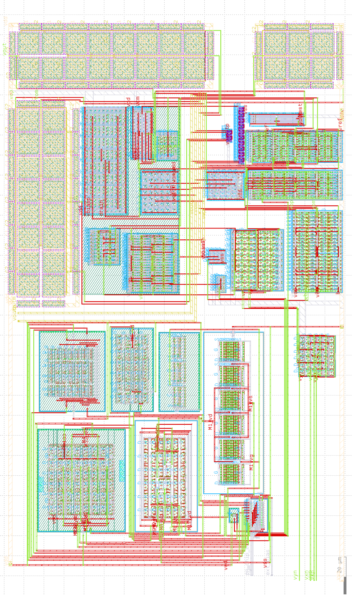
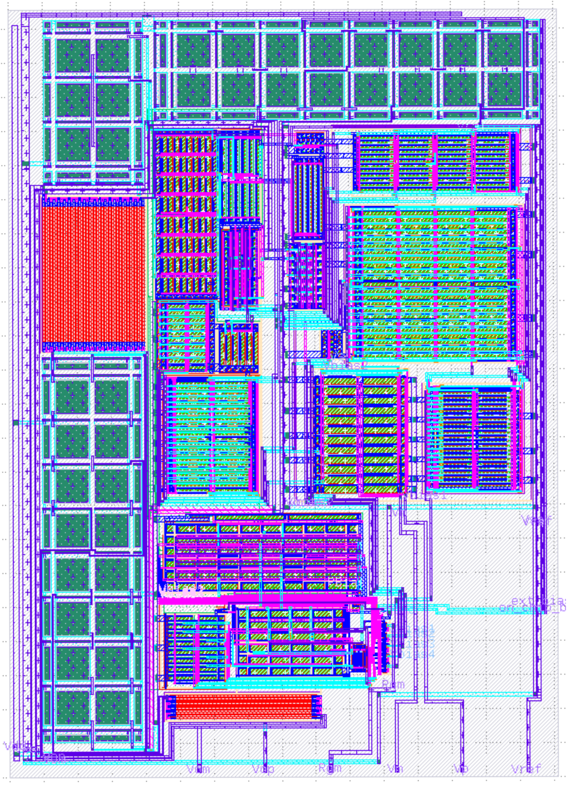

← Back to home
INTEGRATED CIRCUIT DESIGN · 2024—PRESENT
Chip gallery.
Physical layout views from my biomedical analog and mixed-signal IC work.

Fully differential multiplier
Physical layout of the CMOS multiplier used for I/Q demodulation.
View multiplier project ↗
Fully differential op-amp
Physical layout of an amplifier designed for low-frequency EEG filter applications.
View op-amp project ↗
8-bit SAR ADC
Layout view of a fully differential successive-approximation converter.
View SAR ADC project ↗